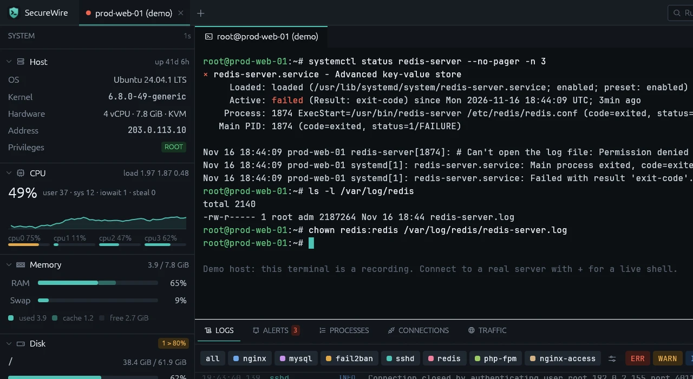

Getting started
SecureWire is a desktop SSH client with live panels for the things you check on every login. This page covers installing it, connecting, and the features you'll use most.
Install
Download the package for your system from the download section or the GitHub releases.
| System | Package | Notes |
|---|---|---|
| Windows 10/11 (x64) | Installer (…-setup.exe) or portable .zip | The installer is per-user and needs no admin rights. Choose "all users" in it if you prefer. SmartScreen may warn because the app isn't code-signed yet: click More info → Run anyway. |
| Debian, Ubuntu, Mint | .deb | sudo apt install ./securewire_1.0.0-1_amd64.deb |
| Any Linux (x86_64) | .AppImage or .tar.gz | chmod +x securewire-*.AppImage, then run it. Needs OpenGL and X11 or Wayland. |
| macOS 11+ (Apple silicon) | .dmg or .tar.gz | Drag SecureWire to Applications. The app isn't notarized yet, so open it the first time with right-click → Open. |
Want to look around first? securewire --demo opens a demo host with sample data, no server needed. securewire --version prints the version.
Connect to a server
Click Connect to a host on the welcome screen, or + in the top bar. Fill in:
- Address, port and user.
- Authentication: ssh-agent, a key file (with its passphrase if it has one), or a password. Passwords and passphrases are never saved.
- Jump host (optional): another saved host or
~/.ssh/configentry to go through, likeProxyJump.
Import ~/.ssh/config adds your existing hosts in one go.
The first time you connect, SecureWire shows the server's host key fingerprint for you to check. Choose to trust it once or always. Known keys come from your own ~/.ssh/known_hosts too. If a key changes, the connection stops and does not let you click through.
Sudo
Firewall rules, fail2ban, root-only log files and service actions need root. When you connect as a normal user, SecureWire asks for your sudo password once for the session:
- It's kept in memory only and reaches
sudo -Sthrough a channel's stdin: never in arguments, the environment, logs or your terminal. - The monitoring script then runs under a single
sudofor the whole session, so your auth log isn't flooded. - Skip it and those sections say "needs sudo". Click no sudo in the status bar to be asked again.
- Logged in as
root? Nothing is asked.
You can allow it without a password, but understand what that means. The script runs as sudo -n -- bash -s …, so the rule has to allow bash, which is full root without a password:
# /etc/sudoers.d/securewire: only if you accept passwordless root for this user
deploy ALL=(root) NOPASSWD: /usr/bin/bashTyping the password once per session is the safer default.
The window

- Top bar: one tab per host (Ctrl 1…9), the command palette, and buttons to show or hide each panel.
- Terminal (centre): tabs on the same connection. Ctrl Shift T opens one. Typing
exitcloses it. - System (left): host, CPU, memory, disks (click a mount for its largest directories), network, listening ports, tunnels and sessions.
- Watch (right): services, firewall, security (fail2ban, failed logins) and scheduled jobs (timers and cron).
- Dock (bottom): Logs, Alerts, Processes, Connections and Traffic.
- Status bar: who you're logged in as, the host key, round-trip time, refresh rates and how much bandwidth monitoring uses.
Collapse any section you don't need: it stops collecting. When the window is unfocused or minimized, collection slows down. Hosts in background tabs are refreshed less often.
Services
Click + in the Services header to choose which systemd units to watch. Three modes:
- Live: systemd pushes state changes, so a crash shows within a second. Memory and PID refresh every 30 s.
- Poll: checks on a fixed interval (30 s by default).
- Manual: only when you refresh (F5 when the terminal isn't focused).
Click a service for its actions: restart, reload, stop or start; status in the terminal; follow its logs; tunnel one of its ports.
Logs and alerts
Open the log sources dialog from the Logs toolbar. SecureWire lists the journal units and log files it found on the server. Enable the ones you want, and each gets its own colour. Then:
- Filter by level (ERR, WARN, INFO, DBG), by source, or with a regex (Ctrl Shift L).
- Follow mode keeps the newest line in view.
- Root-only files are read through sudo.
- After a reconnect, journal sources resume exactly where they stopped.
The Alerts tab collects failed units, disks above 80%, public ports without a firewall rule, a firewall that accepts everything, and more. Each alert has the buttons to deal with it.

Traffic and IPs
Add an nginx or apache access log as a log source, and the Traffic tab appears. It shows requests by status class, the top clients and recent requests.
Click an IP address anywhere (Traffic, a log line, a connection or a banned list) to:
- show only that client's requests, or the log lines that mention it;
- ban or unban it with fail2ban;
- copy it.
Actions
Actions are the only things SecureWire changes on a server, and only when you ask:
| Action | Where |
|---|---|
| Restart / reload / stop / start a service | Service menu, alerts, command palette |
| Kill a process (TERM, or KILL) | Processes tab |
| Ban / unban an IP with fail2ban | Any IP menu, Security section, palette |
| Largest directories under a path | Click a disk, alerts, palette (read-only) |
| Who's using a port | Listening sockets, palette (read-only) |
Before an action that changes anything runs, a dialog shows the exact command line it will send. Nothing else is sent. The output appears in a window when it finishes, and the affected panels refresh.

Tunnels
Reach a service on the server from your own computer, such as a database, Redis or an admin dashboard, without exposing it:
- Click a service and choose Tunnel port N. Or open All sockets… under the listening ports and click Tunnel.
- SecureWire listens on
127.0.0.1on your computer. It uses the same port number if it's 1024 or higher, otherwise port + 10000 (MySQL 3306 → 3306, HTTP 80 → 10080). - The Tunnels list in the System panel shows each one. Copy its address, open it in your browser, or close it.
Tunnels use the host's existing SSH connection (like ssh -L) and survive reconnects. Other machines on your network can't use them.
Keyboard shortcuts
App shortcuts use Ctrl Shift so that everything else reaches your shell: Ctrl B for tmux, Ctrl C, Ctrl R and so on.
| Keys | Action |
|---|---|
| Ctrl Shift P | Command palette |
| Ctrl Shift T / W | New / close terminal tab |
| Ctrl Tab / Ctrl Shift Tab | Next / previous terminal tab |
| Ctrl 1…9 | Switch host |
| Ctrl Shift B / R / J | Toggle left / right / bottom panel |
| Ctrl Shift L | Focus the logs filter |
| Ctrl Shift C / Ctrl V | Copy / paste in the terminal (plain Ctrl C copies only while text is selected) |
| Shift PageUp / PageDown | Scroll terminal history |
| F5 | Refresh every section now (when the terminal isn't focused) |
| Esc | Close a dialog or the palette, back to the terminal |
Configuration
Saved hosts, watched services and log sources live in hosts.toml:
| Windows | %APPDATA%\SecureWire\SecureWire\config\ |
|---|---|
| Linux | ~/.config/securewire/ |
| macOS | ~/Library/Application Support/dev.SecureWire.SecureWire/ |
[[host]]
name = "prod-web-01"
address = "203.0.113.10"
port = 22
user = "deploy"
auth = "agent" # agent | key | password (prompted, never stored)
jump = "" # optional: another host to go through
[host.services]
mode = "live" # live | poll | manual
units = ["nginx.service", "mysql.service", "fail2ban.service"]
[[host.logs]]
id = "nginx-access"
kind = "file" # journal | file | sudo-file
target = "/var/log/nginx/access.log"Host keys you trust are saved to SecureWire's own known_hosts in the same folder. Your OpenSSH file is never modified. Uninstalling the app keeps this folder; delete it to remove your saved hosts.
What runs on the server
Nothing is installed or written. While you're connected, the server runs:
- your shell, one per terminal tab;
- one
bashprocess reading the monitoring script from SSH (under onesudoif you gave a password). It reads/procand runs the usual tools:df,ss,systemctl,ufw/nft/iptables,fail2ban-client; journalctl -fandtail -Ffor the logs you follow;- short-lived commands for actions you confirmed.
All of it ends when you disconnect. On a 2-vCPU VM this costs about 0.3% of one CPU core and under 1 KB/s of traffic with the default panels open. The protocol is documented in collector-protocol.md.
Build from source
You need a stable Rust toolchain, 1.90 or later. On Linux, also install libxkbcommon-dev libwayland-dev libgl1-mesa-dev.
git clone https://github.com/ismailian/SecureWire.git
cd SecureWire
cargo run --release -p securewire # the app
cargo run --release -p securewire -- --demo # with the demo hostOn Windows, packaging\windows\build-installer.ps1 builds the installer with Inno Setup 6. For the architecture, tests and design notes, see CLAUDE.md and the design folder.